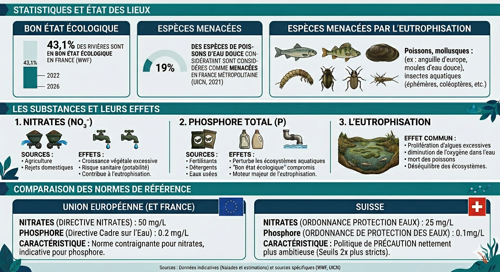

Contexte & enjeux
Nitrates et phosphore dans les eaux de surface :
et si nous appliquions les normes suisses ?
La qualité des eaux de surface est encadrée par des réglementations qui varient selon les pays. Mettre en regard les normes européennes et suisses permet de révéler la relativité de ces seuils et de questionner notre ambition collective face à la pollution des cours d'eau.

Cartographie interactive
Sélectionnez un paramètre et basculez entre les normes pour visualiser l'état des stations de mesure.
Chargement des données…